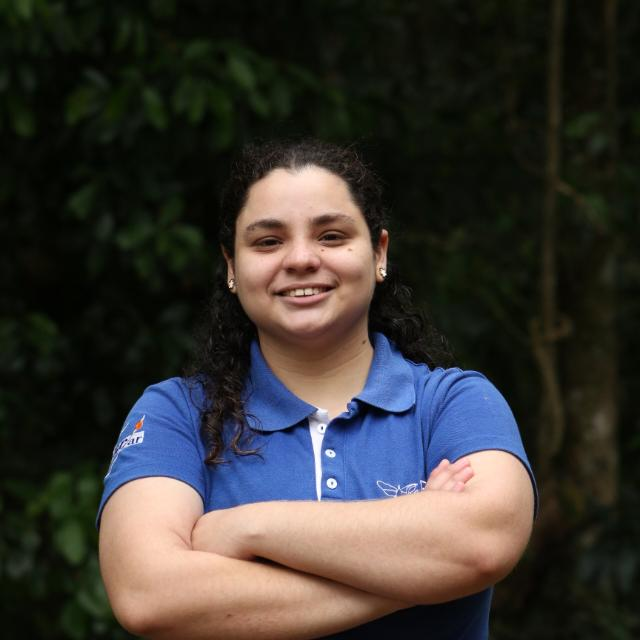

Estudante de Engenharia Agronômica na UFSCar com atuação interdisciplinar entre tecnologia, análise de dados, desenvolvimento de software e pesquisa científica aplicada à agricultura. Desenvolvo ferramentas digitais que transformam dados em decisões reais.

Sou estudante de Engenharia Agronômica na UFSCar (São Carlos) com ênfase em Entomologia Agrícola, mas minha atuação vai muito além do laboratório. Desenvolvo softwares, trabalho com dados agrícolas e busco transformar resultados científicos em ferramentas concretas para instituições e produtores.
Meu diferencial é a integração entre agronomia, programação e ciência de dados. Enquanto outros estudam tecnologia ou propõem ideias, eu desenvolvo plataformas web, modelo dados de campo com R e estatística, e construo sistemas embarcados de monitoramento com ESP32 e visão computacional — tudo conectado a problemas agrícolas reais.
Com olho no futuro, estou direcionando minha trajetória para a interseção entre Computação e Ciências Agrárias, com interesse em seguir para pós-graduação em Ciência da Computação aplicada à agricultura de precisão.
Desenvolvimento e validação de sistema de monitoramento automatizado do Anthonomus grandis. Armadilhas eletrônicas com ESP32-CAM, SIM/GSM e painéis solares capturam imagens a cada 10 minutos e transmitem para IA que detecta a praga automaticamente. 50 dispositivos por área experimental. Comunicação de invenção em andamento.
Plataforma web para reunir preços de culturas e dados climáticos em linguagem acessível a agricultores familiares. Análise, filtros interativos e visualizações para apoiar tomada de decisão de mercado.
Monitoramento semanal de infestação em algodão durante 3 safras. Integração de dados de campo e variáveis meteorológicas com análise de correlação de Pearson. Manuscrito em preparação para a Pest Management Science.
Sistema digital para aproximar cooperativas da agricultura familiar e os RUs da UFSCar. Organização de informações de fornecimento, acompanhamento de entregas e mediação entre produtores e unidades consumidoras.
Visitas técnicas a escolas públicas em Taquarituba/SP ensinando identificação, coleta e preservação de insetos. Formação de consciência entomológica em estudantes do ensino básico.
Ferramenta computacional desenvolvida como produção técnica do grupo de pesquisa GEAG para suporte ao monitoramento e análise de dados do agroecossistema do algodoeiro.
Aberta a colaborações em pesquisa, projetos de desenvolvimento, convites para palestras e parcerias entre agronomia e tecnologia. Se você trabalha na intersecção dessas áreas, me chama.